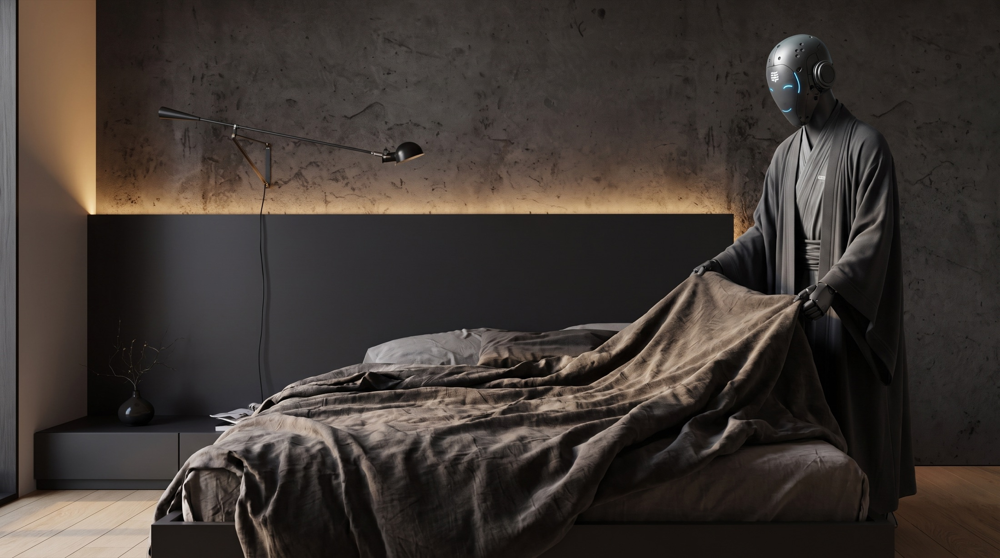
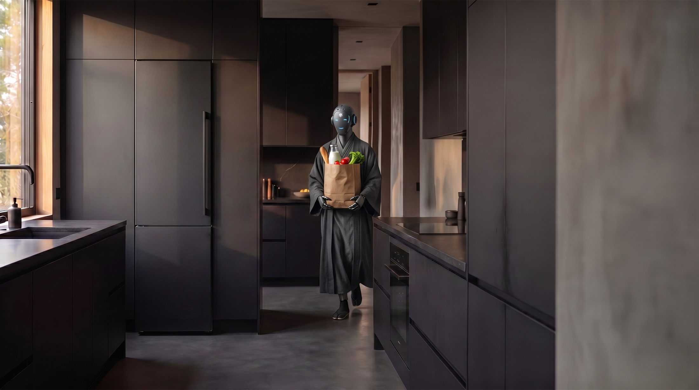
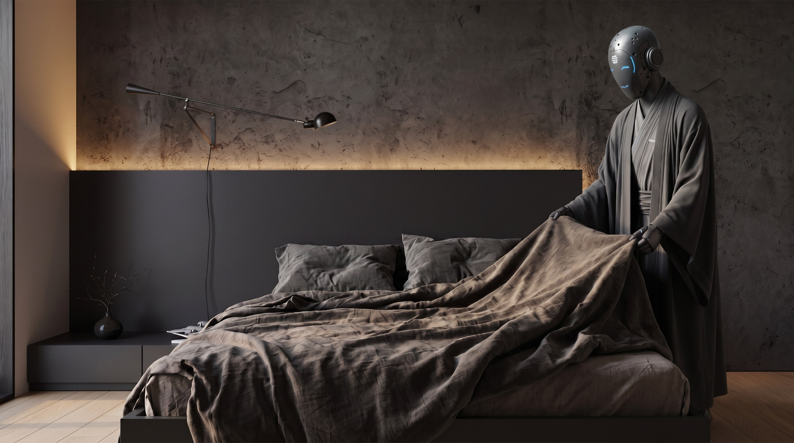
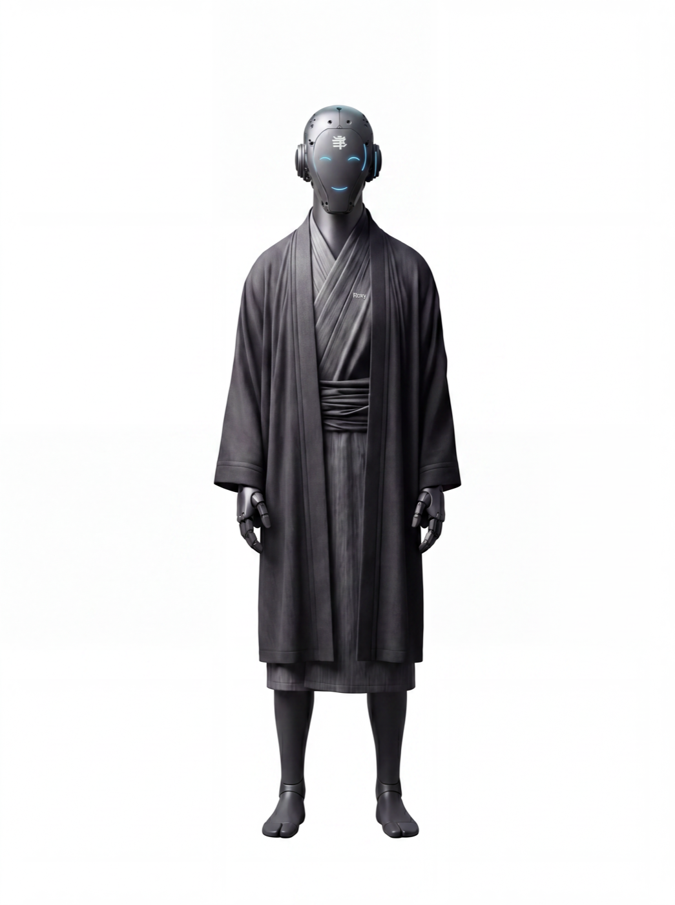
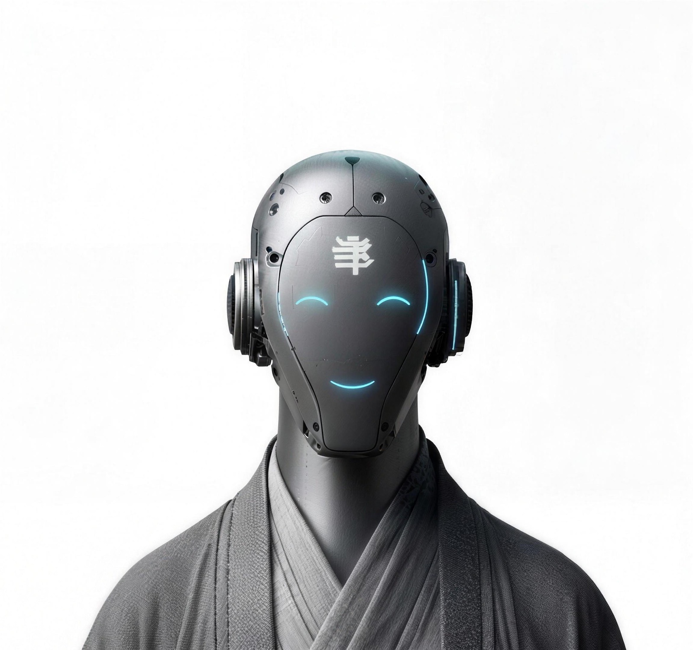

Экономия времени
→
0
часов/ месяц
03 · Забота
Встретит курьера и заберёт доставку —
вы узнаете об этом из уведомления.

04 · Тишина
Заправит постель и приберётся в спальне,
пока вы завтракаете. Приводы — тише шёпота.
05 · Возможности
Учится вашим привычкам с первого дня: как вы складываете свитеры, куда ставите чашку и во сколько просыпаетесь.

Принёс продукты · 09:12
Спальня готова · 08:0406 · Инженерия

07 · Первые владельцы
214 дней с RoxyПервую неделю я ходила за ним и проверяла. Потом перестала — он складывает бельё аккуратнее меня, и мне не стыдно это признать.
МКМарина КовалёваАрхитектор · Москва
Он складывает бельё аккуратнее меня — и мне не стыдно это признать.
Дети зовут его Рокс. Кот спит у его зарядной станции. Теперь он член семьи.
Купил ради уборки. А ценю за тишину: дома порядок, ужин и ни звука.
Roxy напоминает родителям о лекарствах и шлёт мне отчёт. Я стала спать спокойнее.
08 · Предзаказ
Первая партия — 500 роботов. Каждый собирается под владельца: рост полок, привычки семьи, оттенок кимоно.
Депозит 50 000 ₽ — возвратный
в любой момент до отгрузки

Партия №1 · осталось 137 мест09 · Вопросы
Нажмите на вопрос — Roxy ответит лично. Он отвечает быстрее нашей службы поддержки.
10 · Контакты
Дизайн-студия и материалы
Katajanokanlaituri 3, 00160
Штаб-квартира и шоурум
Большая Никитская, 12, стр. 1
Лаборатория моторики
Сибуя, Джингумаэ 5-52-2